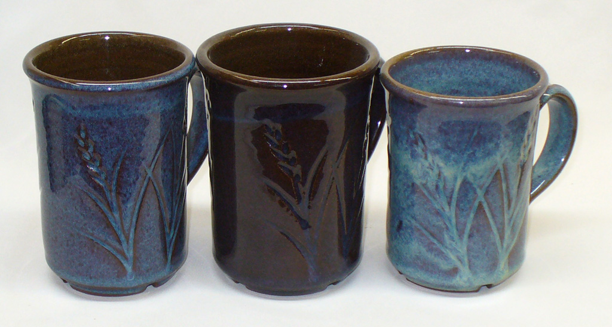
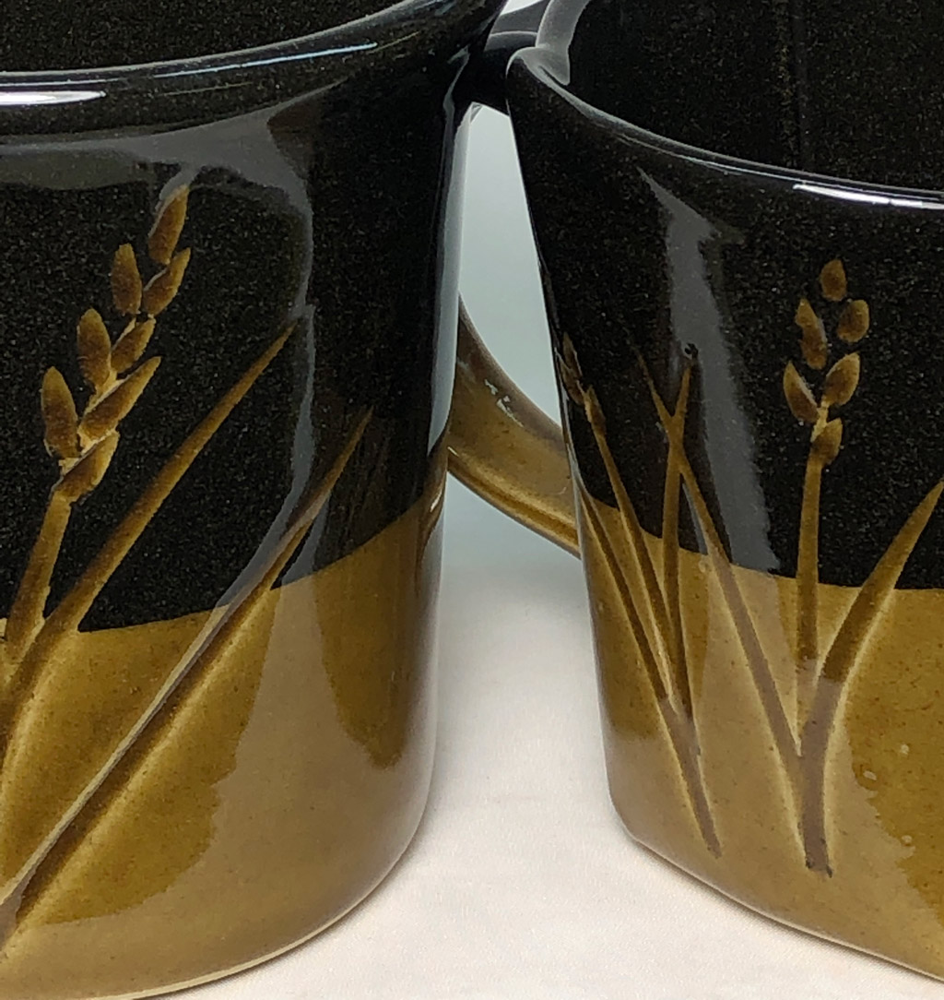
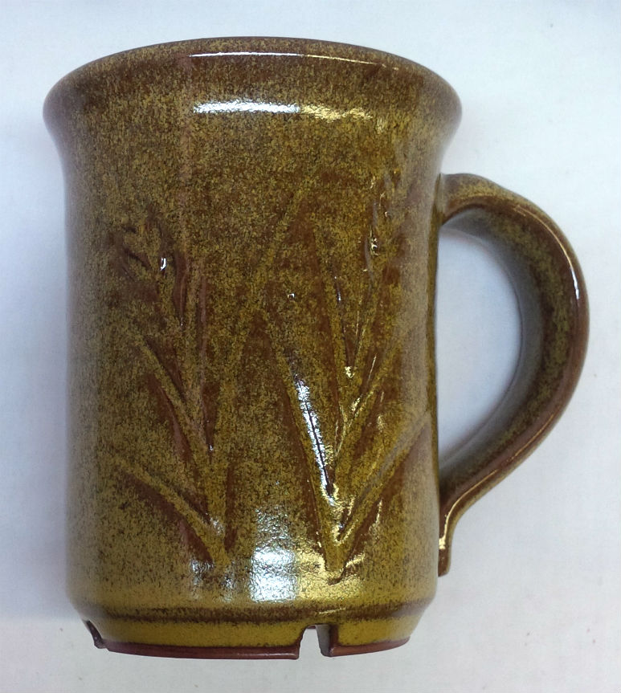
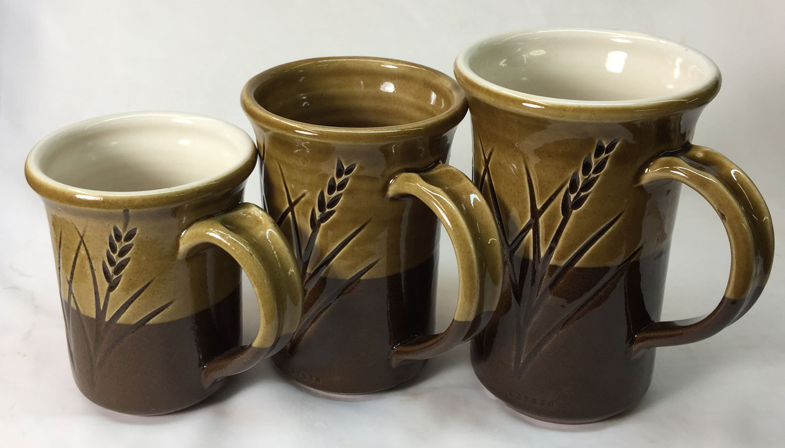
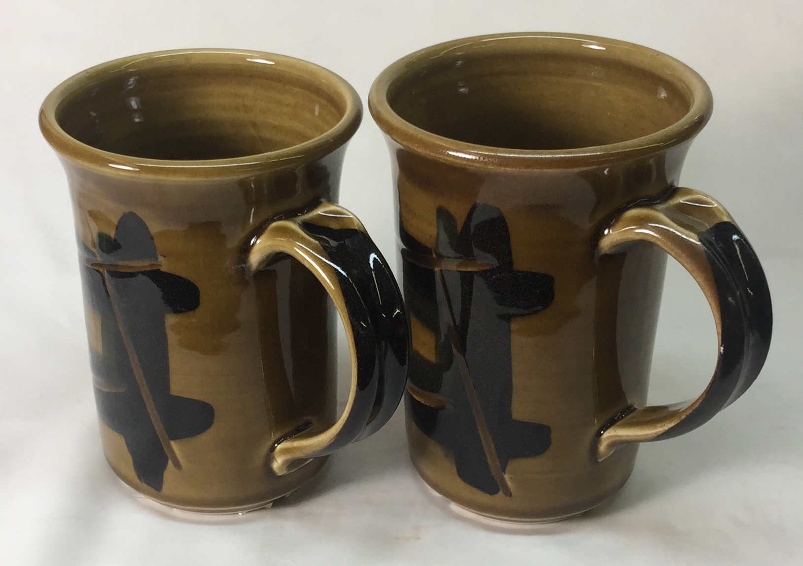
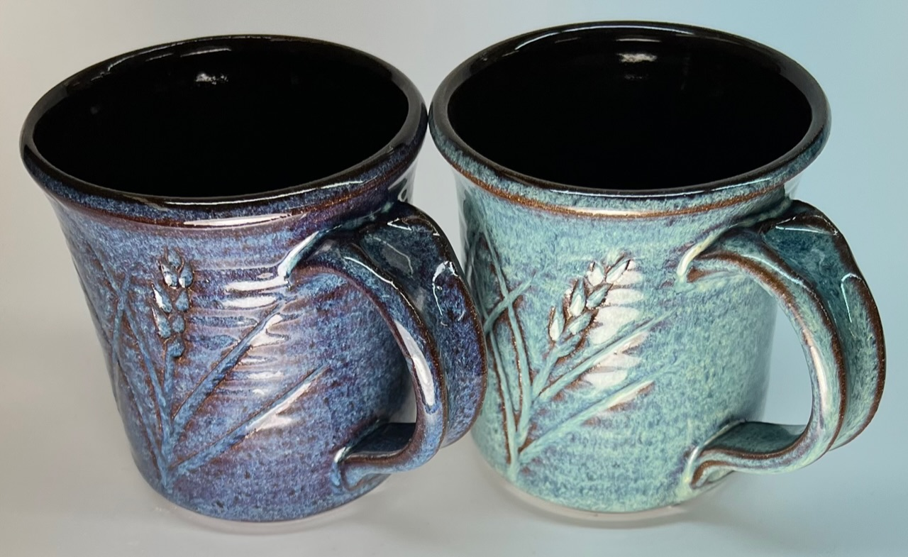

04DSDH - Low Temperature Drop-and-Hold
BQ1000 - Plainsman Electric Bisque Firing Schedule
BRTF05 - Bartlett Fast Glaze Cone 05
BRTF6 - Bartlett Fast Glaze Cone 6
BRTS6 - Bartlett Slow Glaze Cone 6
BTFB04 - Bartlett Fast Bisque Cone 04
BTSB04 - Bartlett Slow Bisque Cone 04
BTSG05 - Bartlett Slow Glaze Cone 05
C04PLTP - Plainsman Low Temperature Drop-and-hold
C10RPL - Plainsman Cone 10R Firing
C5DHSC - Plainsman Cone 5 Drop-and-Hold Slow-Cool
C6DHSC - Plainsman Cone 6 Drop-and-hold, Slow Cool
C6IRED - Cone 6 Iron Reds
C6MSGL1 - Mastering Glazes Cone 6
C6PLST - Plainsman Cone 6 Electric Standard
FSCG1 - Shimbo Crystal Schedule 1
FSCGB1 - Shimbo Crystal Holding Pattern 2
FSCGCL - Shimbo Crystal Celestite Schedule
FSCGWM - Wollast-O-Matte Fara Shimbo Crystalline Glaze
FSCRGL - GC106 Base for Crystalline Glazes
FSHP1 - Shimbo Crystal Holding Pattern 1
FSHP3 - Shimbo Crystal Holding Pattern 3
FSNM5 - Fa's Number Five
MDDCL - Medalta Decal Firing
PLC6CR - Cone 6 Crystal Glaze Plainsman
PLC6DS - Cone 6 Drop-and-Soak Firing Schedule
QICA - Quartz Inversion Cracking Avoider
"C6DHSC" Firing Schedule
Plainsman Cone 6 Drop-and-hold, Slow Cool
This is our standard recipe for firing ware at cone 6, especially reactive glaze. The only time we do not use this is when firing variations of the matte G2934, our version of that has the degree of matteness desired when fast-cooled in the PLC6DS schedule. That being said, others are firing G2934 using this schedule or even a modification where, after the half hour soak, the temperature is taken back up to cone 5 and then dropped or slow cooled back to 2100 again (a technique borrowed from crystalline glazers).
We first started using this to develop the bright blue coloration of rutile glazes (e.g. GA6-C). However, this also improves the most glossy glazes, producing a better defect-free surface. This is also good for getting maximum matteness in glazes (since time is needed for the micro-crystals to grow).
You must program this manually, there is no built-in schedule even remotely similar. Include a self-supporting cone 6 frequently in firings to monitor the accuracy of your controller. Adjust the temperature of step 3 to correspond to where the tip of cone 6 falls even with the top of the base (see picture below). Don't have a kiln controller? With a little experimentation you can develop a switching pattern to approximate this.
Once you see the improvement in stoneware glaze surfaces with a slow-cool firing you will never go back. In our studio, glazes that would fire full of pinholes on even a coarse sculpture body, fire glassy-smooth with this schedule! If you are using porcelainous bodies and commercial glazes (or highly fritted ones) slow cool firing might not make a difference for you.
One thing to think about: Slow cools can shorten the life of relays in electric kilns.
| Step | °C | °F | Hold | Time | |
|---|---|---|---|---|---|
| 1 | 60°C/hr to 121C | 108°F/hr to 250F | 60min | 2:37 | Longer soak if bisque ware is waterlogged and heavy |
| 2 | 194°C/hr to 1148C | 350°F/hr to 2100F | 15min | 8:09 | Climb faster if ware is thin |
| 3 | 60°C/hr to 1204C | 108°F/hr to 2200F | 10min | 9:14 | Slower climb if ware is thick, longer hold for larger kilns, adjust top temp according to cones |
| 4 | 500°C/hr to 1148C | 900°F/hr to 2100F | 30min | 9:51 | Drop quickly |
| 5 | 83°C/hr to 760C | 150°F/hr to 1400F | 14:31 | Slow cool to 1400F and turn off kiln |
"Fahrenheit degrees" is not the same as "degrees Fahrenheit". A 100° reading on a Fahrenheit thermometer is equal to a 37° reading on a Celcius thermometer. But "100 Fahrenheit degrees of temperature change" is equivalent "55 Celsius degrees of change". That is an important distinction to understand the above temperature conversions.
Related Information
Manually programming a Bartlett V6-CF hobby kiln controller

This picture has its own page with more detail, click here to see it.
I document programs in my account at insight-live.com, then print them out and enter them into the controller. This controller can hold six, it calls them Users. The one I last edited is the one that runs when I press "Start". When I press the "Enter Program" button it asks which User: I key in "2" (for my cone 6 lab tests). It asks how many segments: I press Enter to accept the 3 (remember, I am editing the program). After that it asks questions about each step (rows 2, 3, 4): the Ramp "rA" (degrees F/hr), the Temperature to go to (°F) to and the Hold time in minutes (HLdx). In this program I am heating at 300F/hr to 240F and holding 60 minutes, then 400/hr to 2095 and holding zero minutes, then at 108/hr to 2195 and holding 10 minutes. The last step is to set a temperature where an alarm should start sounding (I set 9999 so it will never sound). When complete it reads "Idle". Then I press the "Start" button to begin. If I want to change it I press the "Stop" button. Those ten other buttons? Don't use them, automatic firing is not accurate. One more thing: If it is not responding to "Enter Program" press the Stop button first.
Program your firings manually
Calibrate the final temperature using cones

This picture has its own page with more detail, click here to see it.
Here is an example of our lab firing schedule for cone 10 oxidation (which the cone-fire mode does not do correctly). To actually go to cone 10 we need to manually create a program that fires higher than the built-in cone-fire one. Determining how high to go is a matter of repeated firings verified using a self-supporting cone (regular cones are not accurate). I keep notes in the schedule record in an account at insight-live.com. And we have a chart on the wall showing the latest temperature for each of the cones we fire to. What about cone 6? Controllers fire it to 2235, we put down a cone at 2200!
How many degrees between these cone positions?

This picture has its own page with more detail, click here to see it.
I was consistently getting the cone on the left when using a custom-programmed firing schedule to 2204F (for cone 6 with ten minute hold). However Orton recommends that the tip of the self supporting cone should be even with the top of the base (they consider the indicating part of the cone to be the part above the base). So I adjusted the program to finish at 2200F and got the cone on the right. But note: This applies to that kiln at that point in time (with that pyrometer and that firing schedule). Our other test kiln bends the cone to 5 o'clock at 2195F. Since kiln controllers fire cone 6 at 2230 (for the built-in one-button firings) your kiln is almost certainly over firing!
Cone 6 rutile floating blue effect lost. Then regained.

This picture has its own page with more detail, click here to see it.
Left: What GA6-C Alberta Slip rutile blue used to look like. Middle: When it started firing wrong, the color was almost completely lost. Right: The rutile effect is back with a vengeance! What was the problem? We were adjusting firing schedules over time to find ways to reduce pinholing in other glazes and bodies. Our focus was slowing the final stages of firing and soaking there. In those efforts the key firing phase that creates the effect was lost: it happens on the way down from cone 6. This glaze needs a drop-and-soak firing (e.g. cooling 270F from cone 6, soaking, then 150F/hr drop to 1400F).
One fired flawless, the other dimpled and pinholed.
These are the same glaze/body. Why?

This picture has its own page with more detail, click here to see it.
The difference is a slow-cool firing. Both mugs are Plainsman M340 and have the L3954B black engobe inside and partway down on the outside. Both were dip-glazed with the GA6-B amber transparent and fired to cone 6. The one on the right was fired using the PLC6DS drop-and-hold schedule. That eliminated any blisters, but some pinholes remained. The one on the left was fired using the C6DHSC slow-cool schedule. That differs in one way: It cools at 150F/hr from 2100F to 1400F (as opposed to a free-fall). It is amazing how much this improves the brilliance and surface quality (not fully indicated by this photo, the mug on the left is much better).
The matteness of this glaze depends on the cooling rate

This picture has its own page with more detail, click here to see it.
This is the G2934Y matte cone 6 recipe with a red stain (Mason 6021). The one on the left was fired using the C6DHSC slow-cool schedule. The one on the right was fired using the drop-and-soak PLC6DS schedule. The only difference in the two schedules is what happens after 2100F on the way down (the slow-cool drops at 150F/hr and the other free-falls). For this glaze, the fast cool is much better, producing a silky pleasant surface rather than a dry matte.
Alberta Slip GA6-A glaze slow-cooled goes matte

This picture has its own page with more detail, click here to see it.
This is GA6-A Alberta Slip base glaze (80 Alberta Slip:20 Frit 3134) fired using the C6DHSC firing schedule (on Plainsman M390 iron red clay). If this is cooled rapidly or 1% tin oxide inhibitor is added, it fires to a glossy clear amber glass with no crystals. This base is needed to make GA6-C rutile blue; otherwise I recommend the GA6-B base (which uses frit 3195 instead), it has a lower thermal expansion and guarantees gloss regardless of cooling speed. If, on the other hand, you want to enhance this effect, just add a little more frit (to gloss it more) and more iron oxide (that should enable matting even at faster cooling speeds.
GA6A Alberta Slip base using Frit 3124, 3249 and 3195 on dark body

This picture has its own page with more detail, click here to see it.
The body is dark brown burning Plainsman M390 (cone 6). The amber colored glaze is 80% Alberta Slip (raw:calcine mix) with 20% of each frit. The white engobe, L3954B, on the inside of two of the mugs is L3954A (those mugs are glazed inside using transparent G2926B). The Alberta Slip amber gloss glaze produces an ultra-gloss surface of high quality on mugs 2 and 3 (Frit 3249 and 3195). On the outside we see it this glaze on the white slip until midway down, then on the bare red clay. The amber glaze on the first mug (with Frit 3124) has a pebbly surface. These are fired using a drop-and-soak firing schedule. Some caution is required with the 3249 version, it has low thermal expansion (that is good on bodies that normally craze glazes, but risks shivering on ones that do not).
P300 and M370 mugs with GA6A Alberta Slip (using Frit 3249)

This picture has its own page with more detail, click here to see it.
Rather than the normal 80:20 AlbertaSlip:Frit3134 recipe, this one substitutes Frit 3249 (super low expansion). The glaze is less runny and even glossier on these Plainsman porcelains. They are fired at cone 6 in a cool-and-soak firing. They survived an BWIW test (boiling water:ice water) without crazing (likely because of the low expansion of frit 3249). The finish is dazzling, a brilliant amber glass with no defects and perfectly even coverage. Of course, the iron in the glass prevents the colors of the blue underglaze from showing through. But the black is great.
Rutile blue cone 6 glaze: Fast vs slow cool firing

This picture has its own page with more detail, click here to see it.
Same clay body: Plainsman Coffee Clay. Same glaze: GA6-C rutile blue. But the mug on the left was fired in the PLC6DS schedule (normally that one does not produce this much blue, but the heavily pigmented clay brings it out). The one on the right was fired in the C6DHSC schedule. That schedule also improves the gloss and surface quality of the inside GA6-B liner glaze.
The G2934 glaze does not work well on dark-burning bodies

This picture has its own page with more detail, click here to see it.
G2934 is a fantastic glaze, but only on the right body and with the right firing schedule. That is not the case here! This firing was done without any control on the cooling cycle. The added zircopax (to whiten it) stiffens the melt and makes G2934 pinhole-prone on dark burning bodies (because they generate more gases during heatup in the kiln). The clay on the right is Plainsman Coffee Clay, it contains 10% raw umber (a super-gasser). The centre one is Plainsman M390, it bubbles glazes more than buff-burning bodies. The left one is M332, it is a coarse grained and that seems to vent gases well enough here to eliminate the pinholes. The surface of the two on the right would be greatly improved using the C6DHSC firing schedule but, unfortunately, the slow cool would matte the glaze surface, making it really ugly. The PLC6DS drop-and-hold schedule might also reduce the pinholes, without matting the surface. What about without the zircon? There would be fewer pinholes, but micro-bubble clouding, which is not visible here because of the opacity, would make for a truly ugly effect on dark bodies.
The same glaze fires very differently depending on kiln cooling rate

This picture has its own page with more detail, click here to see it.
Both mugs use the same cone 6 oxidation high-iron (9%), high-boron, fluid melt glaze. Iron silicate crystals have completely invaded the surface of the one on the left, turning the gloss surface into a yellowy matte. Why? Multiple factors. This glaze does not contain enough iron to guarantee crystallization on cooling. When cooled quickly it fires the ultragloss near-black on the right. As cooling is slowed at some point the iron will begin to precipitate as small scattered golden crystals (sometimes called Teadust or Sparkles). As cooling slows further the number and size of these increases. Their maximum saturation is achieved on the discovery, usually by accident, of the likely narrow temperature range they form at (normally hundreds of degrees below the firing cone). Potters seek this type of glaze but industry avoids it because of difficulties with consistency.
Links
| Firing Schedules |
Plainsman Cone 6 Electric Standard
Used in the Plainsman lab to fire clay test bars in our small kilns |
| Firing Schedules |
Cone 6 Drop-and-Soak Firing Schedule
350F/hr to 2100F, 108/hr to 2200, hold 10 minutes, freefall to 2100, hold 30 minutes, free fall |
| Firing Schedules |
Plainsman Cone 5 Drop-and-Hold Slow-Cool
|
| Firing Schedules |
Bartlett Fast Glaze Cone 6
570F/hr to 1982F, 200/hr to 2232, no holds, no control cool |
| Firing Schedules |
Bartlett Slow Glaze Cone 6
400F/hr to 1982F, 120F/hr to 2232, no holds or controlled cool |
| Firing Schedules |
Mastering Glazes Cone 6
Six-step with controlled drops to 1000C and 760C |
| Recipes |
GA6-C - Alberta Slip Floating Blue Cone 6
Plainsman Cone 6 Alberta Slip based glaze the fires bright blue but with zero cobalt. |
| Glossary |
Drop-and-Soak Firing
A kiln firing schedule where temperature is eased to the top, then dropped quickly and held at a temperature 100-200F lower. |
| Troubles |
Orange Peel Surface
Orange peel is a defect or physical property of ceramic glazes |
 PayPal | No tracking, No ads, No paywall, No transient content! Just organized, concise information constantly updated and improved. Was this helpful? Consider supporting me. |
| By Tony Hansen Follow me on        |  |
Got a Question?
Buy me a coffee and we can talk 

https://digitalfire.com, All Rights Reserved
Privacy Policy